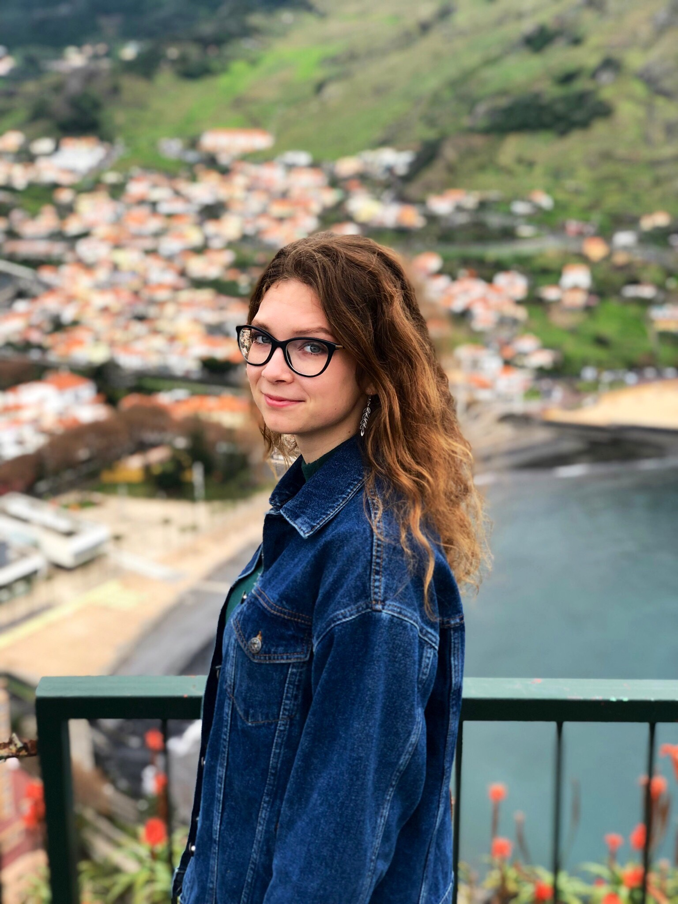

<div id="landingpage">
  <div id="myself">
    <div id="myself-side">
      <div id="myself-side-photo-wrapper">
	
      </div>
      <div id="myself-side-data">
	<div id="myself-side-social-mail">
	  <i class="far fa-envelope"></i>
	  <a href="mailto:mariia.vladimirova@inria.fr">mariia.vladimirova@inria.fr</a>
	</div>
	<div id="myself-side-address">
	  <p>
	    <i class="fas fa-map-marker-alt"></i>
	    655 Avenue de l'Europe,
	    <br/>
	    &nbsp;&nbsp;&nbsp;&nbsp;38330 Montbonnot-Saint-Martin.
	  </p>
	</div>
      </div>
    </div>
    <div id="myself-content">
      <div id="myself-introduction">
	<h1>Hello!</h1>
	<p>I am a PhD student at <a href="https://www.inria.fr/centre/grenoble">Inria Grenoble Rhone-Alpes</a> in <a href="https://team.inria.fr/statify/">Statify</a> and <a href="http://thoth.inrialpes.fr">Thoth</a> teams (Grenoble, France), working under the supervision of <a href="http://lear.inrialpes.fr/people/verbeek/">Jakob Verbeek</a> and <a href="https://www.julyanarbel.com">Julyan Arbel</a>. .</p>
	<p>I was born in Penza, a city that is not far from Moscow (650 km). In 2013 I moved to Moscow for my undergraduated studies.  In 2017 I obtained my Bachelor degree at <a href="https://mipt.ru/english/">Moscow Institute of Physics and Technology (MIPT)</a> and started the second year of Master program at Grenoble Institute of Technology (<a href="http://ensimag.grenoble-inp.fr">Grenoble - INP, Ensimag</a>). During the second semester I had an internship at <a href="https://www.inria.fr/fr/centre-inria-grenoble-rhone-alpes">Inria Grenoble Rhone-Alpes</a> under the guidance of <a href="https://www.julyanarbel.com">Julyan Arbel</a> and <a href="https://dasci.es/personal/perfil/pablo-mesejo-santiago/">Pablo Mesejo</a>. We investigated distributional properties of Bayesian neural networks, see <a href="https://arxiv.org/abs/1810.05193">arXiv</a>. Now I continue this research during my graduate studies. My CV can be downloaded <a href="https://drive.google.com/file/d/1ix9xcKBxiIkW3pfqGq3lWdKfB7-P18Vt/view?usp=sharing">here</a>.</p>
      </div>
      <div id="myself-research-interests">
	        <p><b>Research interests</b>:  Bayesian inference, regularization, kernel methods, neural tangent kernel (NTK), information propogation in NN (e.g. Edge of Chaos), random NN (random weights, LTH) etc.</p>
      </div>
      <!-- <div id="myself-hobbies">
	         <p><b>Hobbies</b>:  travelling, hiking and playing the ukulele.</p>
           </div> -->
      <div id="myself-lastest-news">
	<h1>Latest news</h1>
	<ul>
    <li>- My paper 'Sub-Weibull distributions: generalizing sub-Gaussian and sub-Exponential properties to heavier-tailed distributions' was accepted to <a href="https://onlinelibrary.wiley.com/journal/20491573">Stat Journal</a>, to appear. </li>
	  <li>- I was going to  give a <a href="https://www.i2m.univ-amu.fr/events/marria-vladimirova-inria-grenoble-prior-specification-for-bayesian-deep-learning-models/">seminar on statistics</a> in University of Mathematics, Marseille, 6 April 2020. The date was moved to 19 October, 2020.</li>
	  <li>- I was visiting <a href="https://trinity.duke.edu">Duke University</a> and work under supervision of <a href="https://stat.duke.edu/people/david-b-dunson">David Dunson</a> during November 2019-January 2020. We were working on prior predictive distributions in BNNs.</li>
	  <li>- I have a best poster award at the <a href="http://www.stats.ox.ac.uk/bnp12/">BNP'12</a> conference, 24-28 June 2019 in Oxford, the UK.</li>
	  <li>- My paper 'Understanding Priors in Bayesian Neural Networks at the Unit Level' has been accepted for publication at the <a href="https://icml.cc">ICML'19</a> conference.</li>
	  <li>- I gave a contributed talk at the <a href="https://casi.ie/2019/">CASI'19</a> conference, 15-17 May 2019 in Dublin, Ireland.</li>
	  <li>- I gave a contributed talk at the <a href="https://www.eurandom.tue.nl/event/yes-x-deep-learning-foundations/">YES X: Understanding Deep Learning</a> workshop, 21 March 2019 in Eindhoven,  the Netherlands. I would like to thank the organizers for the financial support.  <a href="https://drive.google.com/file/d/1ZG_nh_HbjODV0AGFmPDN4fAZwC_6n30r/view?usp=sharing">[slides]</a></li>
	</ul>
      </div>
    </div>
  </div>
</div>
